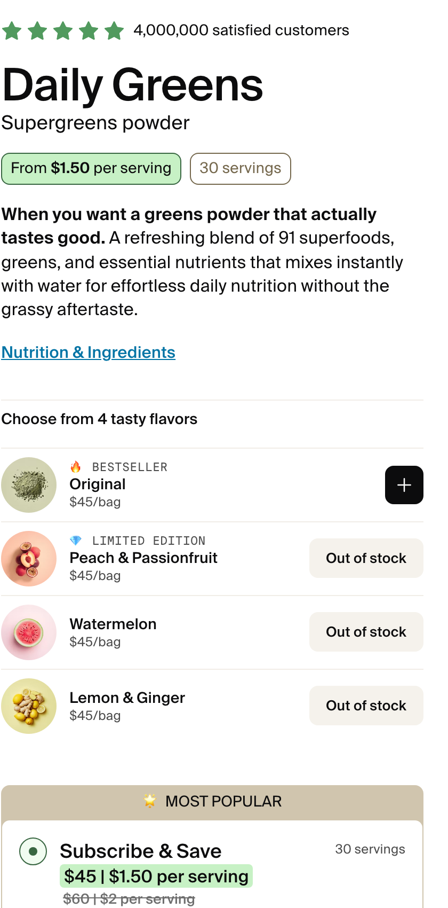

The same product can argue three different things. Only one of them is worth funding first.
Seventy-five things in one scoop. The claim they already own and everyone else copies.
What a person feels by week three. Honest, specific, and almost never in the ads.
The morning glass. The format is the argument, and nobody has led with it.